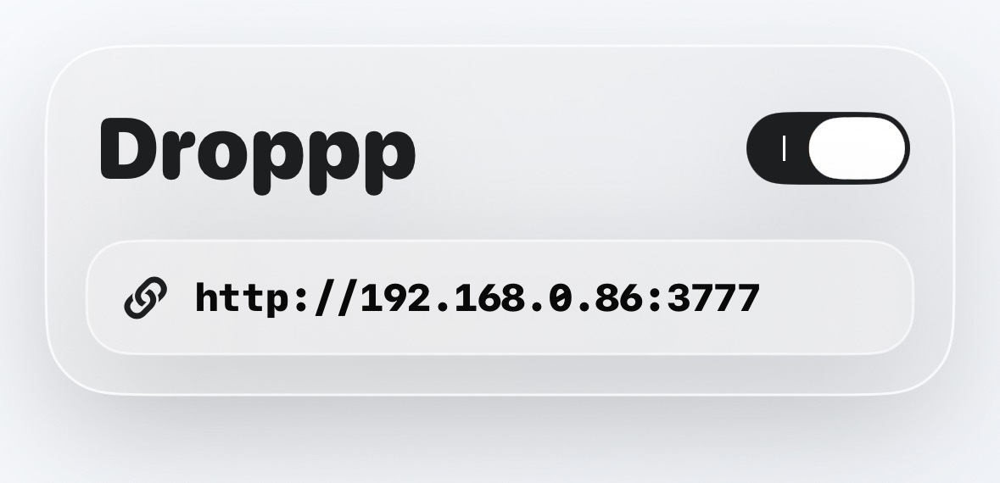
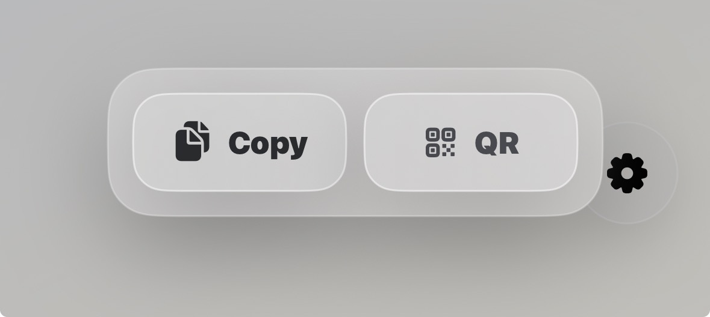
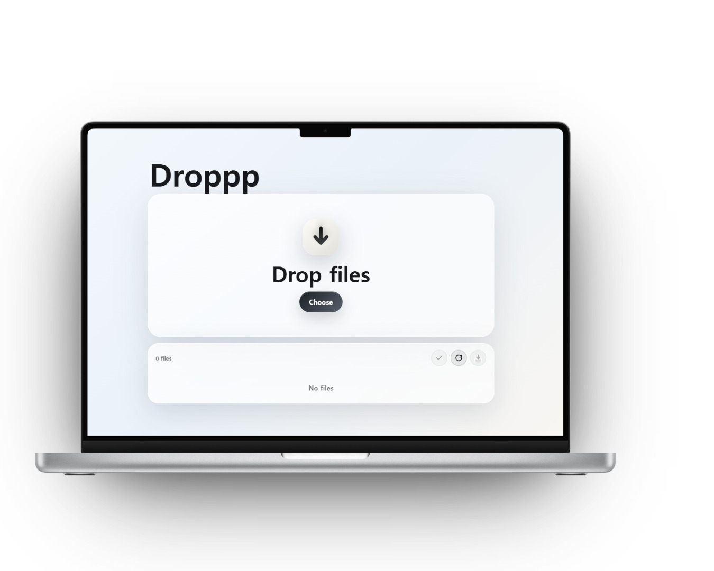
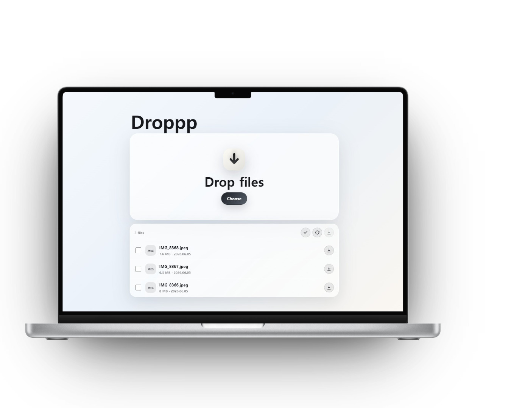
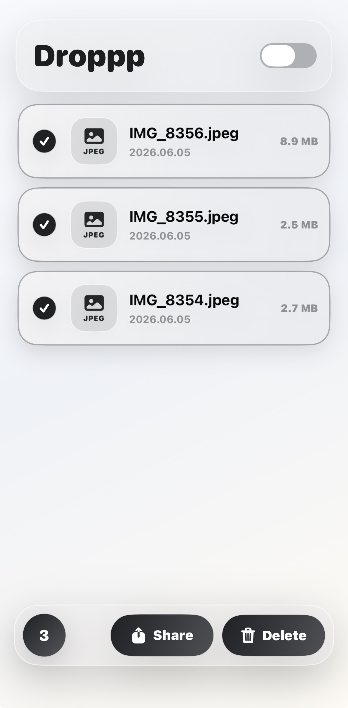
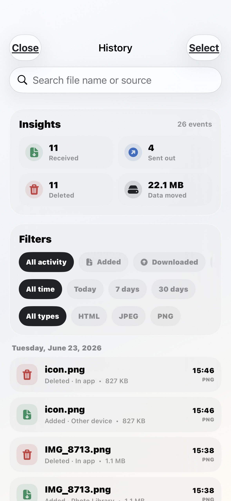
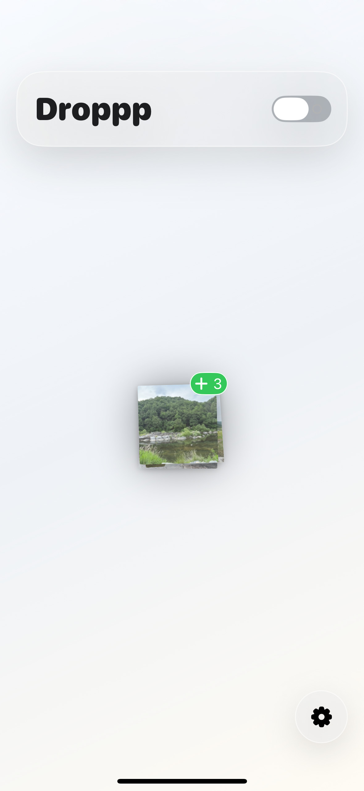
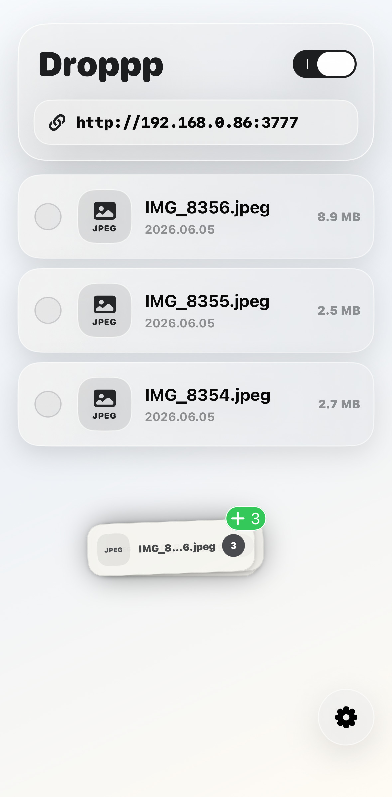
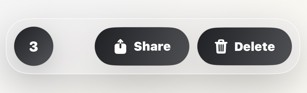
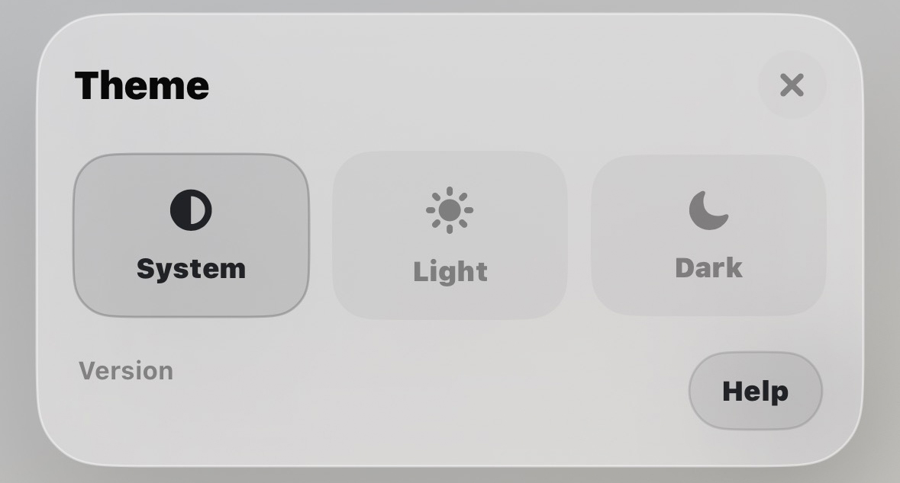

1
Open Droppp and start the local server
Turn on the toggle button on the app screen. Droppp shows a local address while the server is running.

Droppp setup guide
This guide follows the same flow users see inside Droppp: open the app, start the local server, connect from another browser, then upload or download files on the same Wi-Fi network.
First transfer
Each step below maps to a real Droppp screen, so the guide works as both installation help and an in-app reference.
Turn on the toggle button on the app screen. Droppp shows a local address while the server is running.

Tap the URL shown in Droppp to copy the address, or open the QR code when scanning is easier.

On a computer, Android device, Mac, tablet, or nearby browser, open the Droppp address while connected to the same Wi-Fi network.

Drag files onto the browser page to send them to Droppp, or download files that are already saved inside the app.

Files saved on your iPhone or iPad can be viewed, shared, deleted, or moved to another app that supports drag and drop.

Use History Insights to check recent additions, downloads, shares, deletions, and moved data.

More help
These notes cover adding files from other apps, selecting many files, changing the port, and reopening this guide from Settings.
Drag photos or files from your iOS device and drop them onto the Droppp screen to add them to the file library.


After selecting files, tap the selected item count in the lower-left corner to select all files.

Press and hold the local server URL in the app, then enter the port number you want to use.
If you leave the Droppp app screen or the display turns off, the local server stops. Return to Droppp and start the server again when you need another transfer.
When automatic screen dimming is enabled, Droppp keeps the current brightness for 10 seconds, then lowers the screen to the minimum brightness automatically. You can turn this feature on or off in Settings.
Use the Help button inside Settings to view this page again at any time.
